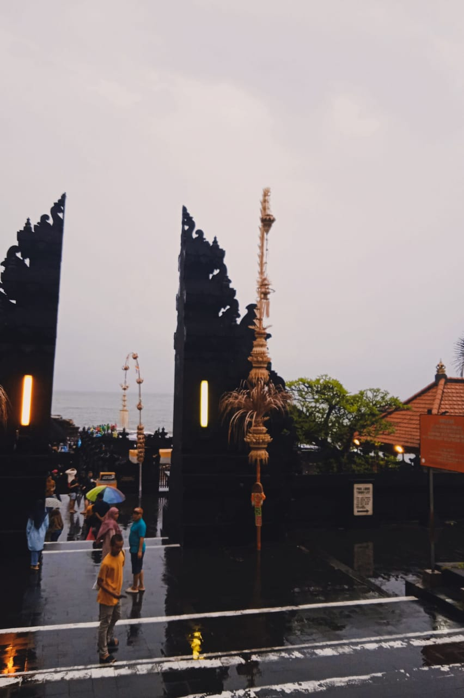

Salah satu objek wisata di pulau dewata adalah Tanah Lot yang berlokasi di Desa Beraban, Kecamatan Kediri, Kabupaten Tabanan. Di Tanah lot terdapat pura diatas tebing batu karang berwarna hitam. Lokasinya berada di pesisir pantai dan umumnya pura tersebut menghadap ke lautan lepas. Disini ada dua pura yang terletak diatas batu besar.satu terletak di atas bongkahan batu dan satunya terletak di atas tebing mirip dengan pura uluwatu tebing ini menghubungkan Pura dengan daratan dan berbentuk seperti jembatan (melengkung). Pura ini disebut Pura Batu Bolong. Pura tanah lot ini merupakan bagian dari pura dang kahyangan. Pura tanah lot merupakan pura laut tempat pemujaan dewa-dewa penjaga laut. Pengunjung tidak diperbolehkan untuk memasuki pura untuk menjaga kesucian pura. Tanah lot terkenal sebagai tempat yang indah untuk melihat pemandangan matahari yang terbenam, namun pada saat kami datang ke tanah lot, kami tak bisa menyaksikan pemandangan tersebut dikarenakan dalam keadaan hujan. Kami sampai Tanah Lot disaat langit hampir berganti malam, gerimis juga turun kala itu. Kebetulan, bus kami parkir ditempat parkir paling bawah sehingga untuk menginjakkan kaki di Tanah Lot juga menguras banyak tenaga. Sebelum memasuki pantai, kami melewati jalan yang sisi kanan kirinya hampir selalu diisi oleh toko toko, entah itu toko makanan, maupun toko baju. Satu hal yang menarik perhatian kami adalah gapura yang kita lewati saat akan menuju pantai Tanah Lot. Hari yang sudah mulai gelap, tidak mengurangi keindahan pantai Tanah Lot. Kami hanya berdiri diatas karang dan pasir tanpa mendekat kearah ombak karena ombaknya yang sangat besar saat itu. Pemandangan di Tanah Lot terlihat indah, dari jauh pun rasanya kami sudah bisa menikmati tanpa perlu mendekat. Karena gelap, kami memang tidak dapat melihat dengan jelas, namun air pantai Tanah Lot berwarna biru bening. Suara ombak yang bertrabakan dengan batu karang membuat suasana menjadi tenang. Udara dan air di Tanah Lot juga terasa dingin, didukung dengan hari yang sudah berganti menjadi malam. Jika kebanyakan pasir pantai rata, pasir di Tanah Lot tempat kita memijakkan kaki tidak rata, agak sedikit naik dan turun. Jadi harus lebih berhati hati, agar tidak terjatuh. Seperti yang kita harapkan di Bali, Tanah Lot berisi banyak turis kala itu. Tanah Lot sendiri menjadi destinasi yang wajib dikunjungi karena batu karang dan Pura nya yang menjadi daya tarik tersendiri. Pura yang ada di Tanah Lot menarik mata pengunjung, karena selain terlihat sederhana juga terlihat megah. Walau warnanya tidak beragam, namun bentuk juga ukiran ukiran yang ada membuat Pura tersebut terlihat menawan. Ditambah dengan tumbuhan hijau nya yang terlihat asri semakin menambah kesan alam. Batu karang yang ada di dekat Pura juga membuat kami takjub karena ukurannya yang besar dan tempatnya yang ada di tengah lautan. Satu hal yang membuat kami senang adalah kami hampir tidak melihat sampah di pantainya, pantai Tanah Lot terlihat indah tanpa ada sampah yang menganggu. Kami harap, kami bisa datang lagi dan melihat keindahan Tanah Lot dengan jelas saat siang hari. Menurut Bli Ketut (tour guide bus kami) asal usul Tanah Lot dikisahkan pada abad ke -15, Dang Hyang Nirarthra melakukan misi penyebaran agama Hindu dari pulau Jawa ke pulau Bali. Pada saat itu Bali dikuasai Raja Dalem Waturenggong. Beliau sangat menyambut baik kedatangan Dang Hyang Nirartha dalam menjalankan misinya, sehingga penyebaran agama Hindu berhasil sampai ke pelosok – pelosok desa yang ada di pulau Bali. Pada suatu saat, Dang Hyang Nirartha melihat sinar suci dari arah laut selatan Bali, maka Dang Hyang Nirartha mencari lokasi dari sinar tersebut dan tibalah beliau di sebuah pantai di desa Beraban Tabanan. Pada saat itu desa Beraban dipimpin oleh Bendesa Beraban Sakti, yang sangat menentang ajaran dari Dang Hyang Nirartha dalam menyebarkan agama Hindu. Dikarenakan ia menganut aliran monotheisme (Monoteisme adalah kepercayaan yang berpendapat hanya ada satu Tuhan yang esa dan berkuasa penuh atas segala sesuatu). Pada saat berada di desa itu, Dang Hyang Nirartha melakukan meditasi di atas batu karang yang menyerupai bentuk burung beo yang pada awalnya berada di daratan. Dengan berbagai cara Bendesa Beraban ingin mengusir Dang Hyang Nirartha dari tempat meditasinya. Pada akhirnya Dang Hyang Nirarthra memindahkan tempat meditasinya ke tengah laut dengan kesaktiannya, ia juga mengubah selendangnya menjadi ular penjaga pura. Ular ini masih ada sampai sekarang dan secara ilmiah ular ini termasuk jenis ular laut yang mempunyai ciri-ciri berekor pipih seperti ikan, warna hitam berbelang kuning dan mempunyai racun 3 kali lebih kuat dari ular cobra.Pada akhirnya, Bendesa Beraban Sakti mengakui kesaktian yang dimiliki Dang Hyang Nirartha dengan menjadi pengikutnya untuk memeluk agama Hindu bersama dengan seluruh penduduk setempat. Batu karang yang telah dipindahkan ke tengah laut diberi nama Tanah Lot yang memiliki arti batu karang yang berada di tengah lautan. Sebelum meninggalkan desa Beraban, Dang Hyang Nirartha memberikan sebuah keris kepada Bendesa Beraban. Keris tersebut memiliki kekuatan untuk menghilangkan segala penyakit yang menyerang tanaman. Keris tersebut disimpan di Puri Kediri dan dibuatkan upacara keagamaan di Pura Tanah Lot setiap enam bulan sekali. Semenjak hal ini rutin dilakukan oleh penduduk desa Beraban, kesejahteraan penduduk sangat meningkat pesat dengan hasil panen pertanian yang melimpah dan mereka hidup dengan saling menghormati. Pura Tanah lot selama ini terganggu oleh abrasi dan pengikisan akibat ombak dan angin. Oleh sebab itu, pemerintah Bali melalui Proyek Pengamanan Daerah Pantai Bali melakukan memasang tetrapod sebagai pemecah gelombang dan memperkuat tebing di sekeliling pura berupa karang buatan. Daerah di sekitar Tanah Lot juga ditata mengingat peran Tanah lot sebagai salah satu tujuan wisata di bali. Renovasi pertama dilakukan sejak tahun 1987 sebagai proyek perlindungan tahap I. Pada tahap ini, tetrapod seberat dua ton diletakkan di depan Pura Tanah Lot. Selain itu, bantaran beton serta dinding buatan juga dibangun sebagai pelindung hantaman gelombang. Namun, peletakan tetrapod mengganggu keindahan dan keasrian alam di sekitarnya sehingga diadakan studi kelayakan dengan melibatkan tokoh agama dan masyarakat setempat pada tahun 1989. Desain bangunan pemecah gelombang di bawah permukaan air dan pembuatan karang buatan dibuat pada tahun 1992 dan diperbaharui lagi pada tahun 1998. Perlindungan pura mulai dilaksanakan sekitar bulan Juni 2000 dan selesai pada Februari 2003 melalui dana bantuan pinjaman Japan Bank for International Cooperation (JBIC) sebesar Rp95 miliar. Keseluruhan pekerjaan meliputi bangunan Wantilan, Pewaregan, Paebatan, Candi Bentar, penataan areal parkir, serta penataan jalan dan taman di kawasan tanah lot.
 klik ini untuk mengunjungi situs web spendaroe